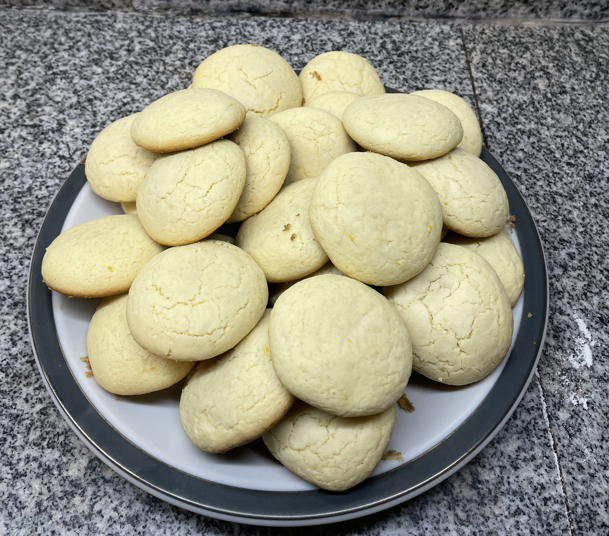
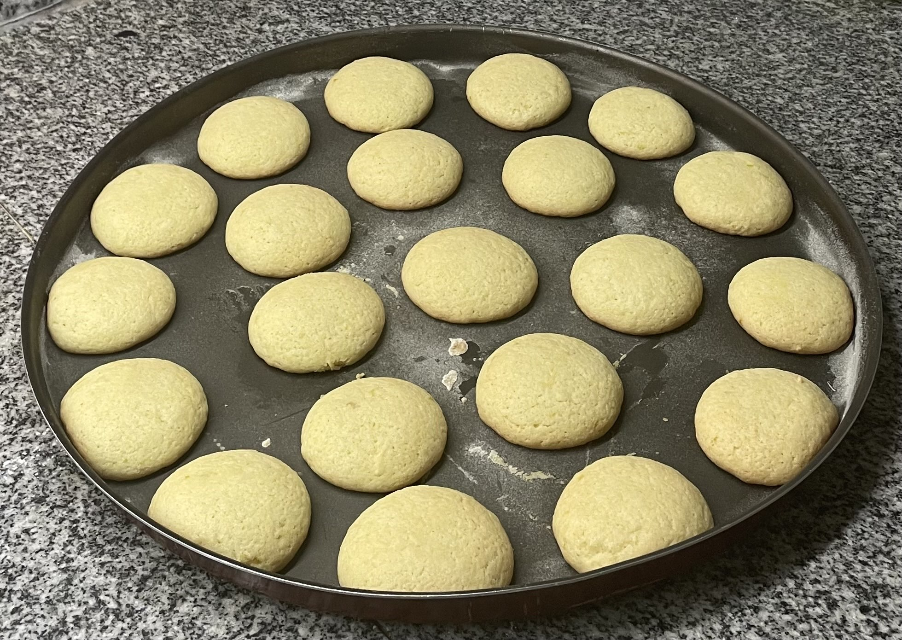

Estas galletas de limón resultan crujientes y con mucho sabor a limón. Recuerda que tienes que dejarlas enfriar completamente para que tengan todo el sabor y la textura crujiente.
INGREDIENTES para unas 30 galletas (según tamaño)
- 225 g de harina fina de repostería o bizcochona (con levadura), Si usas harina corriente añade media cucharadita de levadura química en polvo.
- 115 g de mantequilla, a temperatura ambiente.
- 100 g de azúcar glas
- 1 huevo pequeño
- El zumo de un limón y su ralladura
- 1 pizca de sal
- Opcional: Unas gotas de aroma de limón
ELABORACIÓN de las Galletas de limón
- Precalentamos el horno a 180º.
- Batimos la mantequilla y el azúcar hasta que se integren por completo en una crema lisa y suave.
- Añadimos el huevo y seguimos batiendo. Ponemos el zumo de limón y la ralladura y lo integramos todo bien. Ponemos también el aroma y el colorante. No son necesarios pero potencian el sabor y el color de las galletas.
- Agregamos la harina tamizada y mezclamos hasta que se forme una masa que no se pegue a las manos. Ajustamos el nivel de harina si es necesario.
- Dejamos reposar la masa tapada al menos media hora en la nevera para que se compacte.
- Sacamos la masa y hacemos unas bolitas como albondiguillas. Las ponemos en una bandeja de horno sobre papel satinado un poco separadas unas de otras y las aplastamos un poco con las manos.
- Horneamos las galletas de limón entre 15 y 20 minutos, según tu horno, en la mitad del horno y con calor arriba y abajo. Dejamos enfriar completamente fuera del horno antes de servir.